10 เมนูอาหารพลาดไม่ได้เมื่อไปเที่ยวยุโรป
วัฒนธรรมที่แท้จริงของยุโรป ส่วนนึงที่เราสามารถทำได้คือการลิ้มลองอาหารของประเทศหรือท้องถิ่นนั้น ๆ
โดยเฉพาะอาหารของแถบยุโรปที่ขึ้นชื่อเรื่องความหลากหลาย และความอร่อยเฉพาะตัว ที่ทำให้หลายๆ
ท่านเมื่อมีโอกาสไปเยือนแล้วก็พลาดไม่ได้ ที่จะต้องลิ้มลองความอร่อย แบบต้นตำหรับ
วันนี้แอดมินได้รวบรวม อาหารที่เดินทางไปเยือนแล้วต้องทานและ อาหารต้นตำหรับของประเทศยุโรป
มาให้ทุกๆท่านได้ทราบกันค่ะ ไปดูกันเลยเมนูอะไรบ้าง
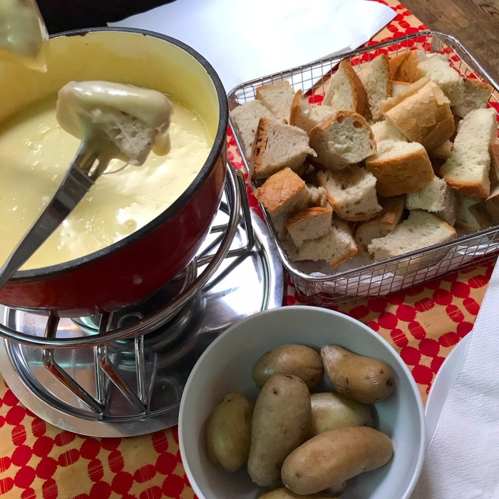
1. ฟองดูชีส (Cheese Fondue)
ฟองดูชีส (Cheese Fondue) สวิตเซอร์แลนด์ไม่ใช่เรื่องน่าแปลกใจที่ชีสจะครองอันดับหนึ่ง
สวิตเซอร์แลนด์เป็นหนึ่งในประเทศที่สามารถผลิตสินค้าประเทศนมได้ดีที่สุดในโลก
ชีสสวิสมีรสชาติหอมมันต่างจากชีสที่ผลิตจากที่อื่น ๆ
และฟองดูเป็นอาหารที่ชาวสวิตรับประทานกันในฤดูหนาวมาตั้งแต่สมัยโบราณ เนื่องจากหน้าหนาวเป็นฤดูที่ผลผลิตต่ำ
ชาวสวิตจึงนำชีสหลากหลายชนิดที่ทำเตรียมไว้มาอุ่นรวมกันในหม้อพร้อมไวน์ขาวและกระเทียมเสิร์ฟพร้อมกับขนมปังและมันฝรั่งเพื่ออบอุ่นร่างกายและยังเป็นการใช้อาหารที่กักตุนไว้อีกด้วย
โดยวิธีการกินฟองดูชีสในแบบสวิสนั้น
คือการใช้ไม้ปลายแหลมที่มีลักษณะเหมือนส้อมจิ้มขนมปังหรือมันฝรั่งและจุ่มลงไปในหม้อชีสได้เลย
และไม่ได้มีเพียงขนมปังเท่านั้นยังมี
เนื้อสัตว์จุ่มน้ำมันอีกด้วยนะคะ และของหวานคือผลไม้จุ่มช็อคโกแลต เพลินมากเลยละคะ ไปถึงสวิสแล้วห้ามพลาดเลย
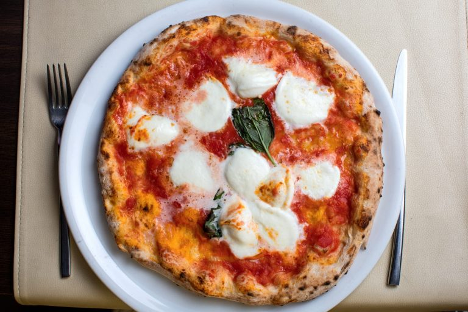
2. พิซซ่าต้นตำหรับ
พิซซ่าต้นตำหรับ (Pizza) ค่ะ
ปฏิเสธไม่ได้ว่านี่กลายเป็นอาหารที่คนทั่วโลกต่างก็ต้องรู้จักกันไปเรียบร้อยและเชื่อว่าน้อยคนนักจะไม่เคยทานพิซซ่า
อาหารชนิดนี้ถือเป็นอาหารประวัติศาสตร์มีจุดเริ่มต้นมาเกือบ 2 พันปี
ซึ่งพิซซ่าที่เราเห็นตามร้านทั่วไปคือการทำให้ตรงกับพื้นที่ของผู้บริโภค
ทำให้ตรงความต้องการของผู้บริโภคในบริเวณนั้น
แต่ถ้าพูดถึงพิซซ่าดั้งเดิมตามสไตล์อิตาลีจะพลาดพิซซ่ามาการิต้า ไม่ได้เป็นอันขาดค่ะ
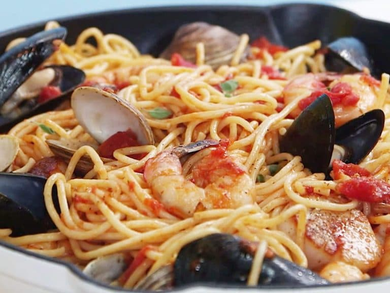
3.สปาเก็ตตี้ ซีฟู๊ด
สปาเก็ตตี้ ซีฟู๊ด เมนูนี้มีส่วนผสมไม่เยอะมาก หลักๆ มีเพียงเส้นสปาเก็ตตี้ หอย ปลาหมึก และกุ้ง เท่านั้น
แอดมินแนะนำว่าใครที่ไปเที่ยวอิตาลีอย่าลืมชิมสปาเก็ตตีซีฟู๊ดต้นตำหรับแท้ๆ ให้ได้รู้เลยว่าจะอร่อยสมกับคำร่ำลือกันป่าว
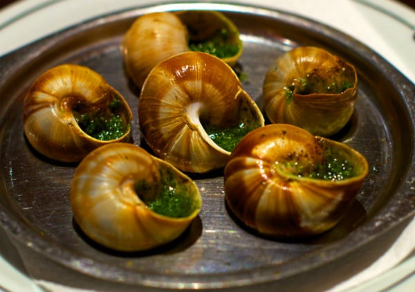
3. หอยเอสคาโก้ อบเนย
Escargot อ่านออกเสียงว่า “แอ็ส-การ์-โก” หรือเอสคาโก้
นี่ก็เป็นอีกหนึ่งเมนูอาหารคาวขึ้นชื่อของชาวฝรั่งเศสที่ใครได้มาเยือนถึงประเทศฝรั่งเศสแล้วก็ต้องห้ามพลาดที่จะลิ้มลองรสชาติของเมนูนี้ค่ะ
เป็นอาหารเรียกน้ำย่อยจานหรูของฝรั่งเศส ที่อาจจะเป็นอาหารที่แปลกสำหรับคนต่างชาติแต่สำหรับผู้คนในฝรั่งเศสแล้ว
นี่คืออาหารยอดฮิตที่มีการบริโภคกันมากถึงสี่หมื่นตันต่อปีค่ะ
สำหรับการเตรียมหอยทากเพื่อนำมาทำอาหารนั้น ไม่ว่าจะได้มาจากฟาร์มเพราะเลี้ยงหรือตามธรรมชาติ
ส่วนใหญ่แล้วคนทำอาหารมักจะต้องนำหอยทากมาขังเพื่อให้อดอาหารและขับของเสียในตัวหอยออกหมดก่อนที่จะนำมาทำอาหารค่ะ
แต่อย่างไรนั้นที่บ้านเราหอยเอสคาโก้ก็คือเมนูหอยทาก (snail) ดี ๆ นี่เองค่ะ
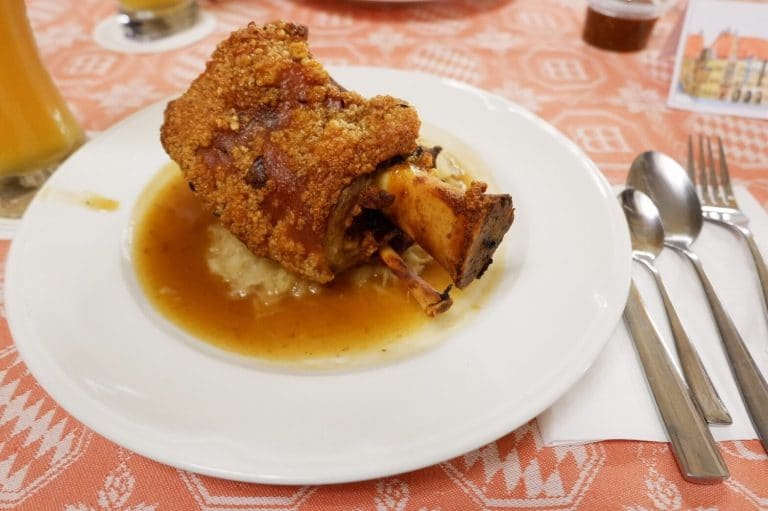
4. ขาหมูเยอรมัน เยอรมนี
แค่ชื่อขาหมูก็รู้แล้วใช่ไหมคะว่า ต้องทานที่ประเทศไหน
ประเทศเยอรมนีถือว่าเป็นหนึ่งในประเทศท่องเที่ยวที่ได้รับความนิยมจาก นักท่องเที่ยวจากทั่วโลกเป็นอย่างมาก
และหนึ่งในความโดดเด่นของการไปเยอรมันที่พลาดไม่ได้นั่นคือเรื่องของอาหาร
เพราะอาหารของที่นี่นอกจากจะมีวัตถุดิบที่สดใหม่แล้ว ยังเป็นการปรุงรสที่ถือว่าอร่อยเลยทีเดียว
เมนูแรกที่พลาดไม่ได้!
ถ้าไปเยอรมันแล้วต้องได้ไปรับประทาน
คือ Schweinshaxe หรือที่เรารู้จักกันในชื่อ “ขาหมูเยอรมัน” เมนูที่ถ้าสั่งในไทยเพียงหนึ่งจานก็รับประทานได้หลายคน
แต่สำหรับวัฒนธรรมของชาวเยอรมันแล้วขาหมูเยอรมัน 1 จาน
จะรับประทานได้เพียงแค่คนเดียว ดังนั้นถ้าคุณได้ไปรับประทานขาหมูเยอรมันสูตรทอดกรอบที่เสิร์ฟพร้อมเครื่องเคียง
คุณจะได้รับขาหมูมา 1 ขา ที่คุณต้องรับประทานเพียงแค่คนเดียวเท่านั้น
ส่วนรสชาติขาหมูของที่นี่เป็นสูตรต้นตำรับที่อร่อยเป็นอย่างมาก
โดยชาวเยอรมันจะชอบรับประทานเมนูนี้คู่กับเบียร์เย็นๆ
ที่ให้รสชาติอร่อยฟินเลยทีเดียวค่ะ
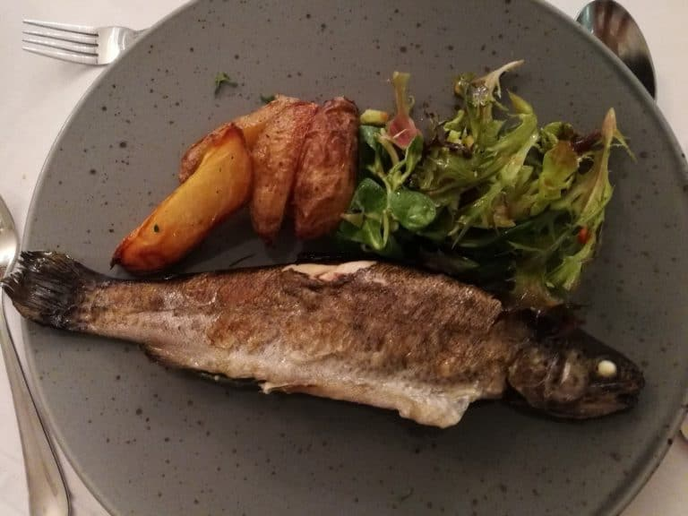
5.ปลาเทร้า ย่างเกลือ
เมื่อนึกถึงปลาเทร้า หลายๆท่านคงจะคิดถึงที่ไหนไปไม่ได้นอกจากทะเลสาบฮัลล์ทัทท์ ออสเตรียใช่ไหมคะ
ปลาเทร้าเป็นปลาน้ำจืด
รสชาติดี และเป็นที่นิยมบริโภค ของคนทั่ว ๆ ไป
เนื่องจากมีกรดไขมันไม่อิ่มตัว โอเมกา 3 สูง ติด 10 อันดับแรกของปลาทั้งหมด (ปลาเทร้า 100 กรัม มีโอเมกา3 1.0
มิลลิกรัม)
กรดไขมันโอเมกา 3 ช่วยลดคลอเรสเตอรอลในร่างกายและประจุอิสระในกระแสเลือด
เป็นปลาที่มีสารอาหารครบถ้วนหาทานได้ง่ายในแถบยุโรปตะวันออกค่ะ
แต่ที่จะต้องทานที่ฮัลล์ทัทท์ก็เป็นเพราะว่านอกจากจะได้ลิ้มลองปลาเทร้าแล้ว
ฮัลล์ทัทท์เป็นทะเลสาบน้ำจืดที่มีขนาดใหญ่
ในขณะที่ทานท่านจะได้สัมผัสกับอากาศและภูมิทัศน์
ล้อมรอบที่สวยงาม ที่เรียกได้ว่าสวยจนไม่อยากจะกระพริบตา เลยล่ะค่ะ
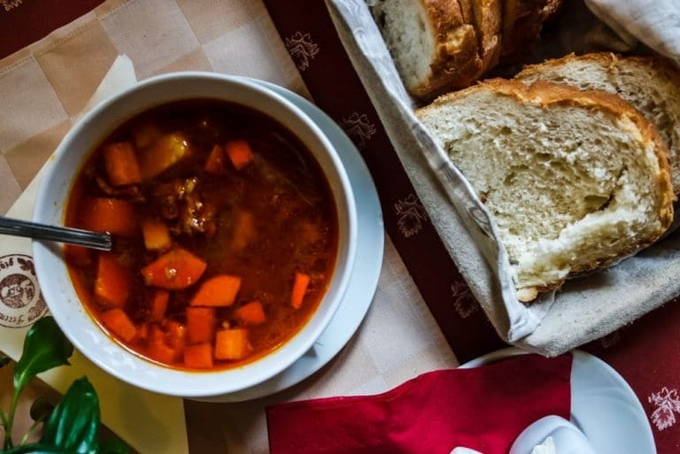
6.ซุปกูลาช (GULASCH)
กูลาช ( goulash) เป็นสตู (หรือซุป) เนื้อสัตว์และผักที่ปรุงรสด้วยผงปาปริกาและเครื่องเทศอื่น ๆโดย
ต้นกำเนิดมาจากฮังการีในสมัยกลาง
กูลาซเป็นอาหารยอดนิยมซึ่งรับประทานกันเป็นหลักในยุโรปกลาง แต่ก็มีการรับประทานในส่วนอื่น ๆ ของยุโรปเช่นกัน
เป็นหนึ่งในอาหารประจำชาติของฮังการีและเป็นสัญลักษณ์หนึ่งของประเทศฮังการี
ที่เมื่อทุกท่านได้มีโอกาสไปเยือนถึงฮังการีแล้ว ก็ต้องห้ามพลาดที่จะลิ้มลอง
กูลาซ ค่ะ โดยต้นกำเนิดของกูลาซย้อนไปได้ถึงสตูของคนเลี้ยงแกะชาวฮังการีในคริสต์ศตวรรษที่ 9 ในช่วงนั้น
เนื้อสัตว์ที่ปรุงและแต่งกลิ่นรสแล้วจะถูกทำให้แห้งโดยใช้ความร้อนจากแสงอาทิตย์เข้าช่วย
จากนั้นจะถูกบรรจุลงในถุงที่ทำจากกระเพาะอาหารของแกะ
โดยต้องเติมน้ำเพียงอย่างเดียวเพื่อให้รับประทานได้ กูลาซในยุคเริ่มแรกจะไม่ใส่ผลปาปริก้า
เนื่องจากยังไม่มีการนำเครื่องเทศชนิดนี้เข้าสู่โลกเก่าจนกระทั่งคริสต์ศตวรรษที่ 16
ได้นำผงปาปิริกา มาผสมใส่ในซุปจนได้เป็นอาหารต้นตำหรับของฮังการีจนถึงปัจจุบัน ค่ะ
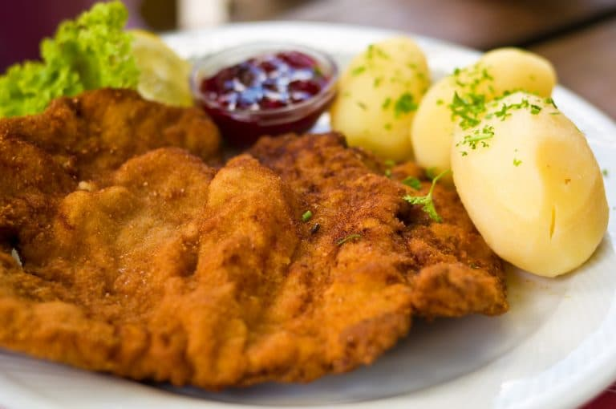
7.วีเนอร์ชนิทเซิล
วีเนอร์ชนิทเซิล Wiener Schnitzel เป็นหนึ่งในอาหารประจำชาติของประเทศออสเตรีย
ปรุงจากเนื้อวัว (หรือเนื้อสัตว์ชนิดอื่น) หั่นบาง ๆ ชุบเกล็ดขนมปังทอด มีสลัดมันฝรั่งเป็นเครื่องเคียง
ที่สำคัญอย่าขอซอสมารับประทานกับอาหารจานนี้เด็ดขาด
เพราะเมนูนี้เขานิยมรับประทานแบบไม่ใส่ซอสกันค่ะ ชนิทเซิล
หมายถึงเนื้อที่ถูกทุบให้บางลงด้วยค้อนทุบเนื้อแล้วนำไปทอดด้วยน้ำมันหรือไขมันสัตว์
โดยทั่วไปมักจะหมายถึงเนื้อที่ชุบแป้งและเกล็ดขนมปังทอด ชนิทเซิลมีต้นกำเนิดมาจากประเทศออสเตรีย
ชนิทเซิลแบบชุบเกล็ดขนมปังเป็นที่นิยมในหลายประเทศทั่วโลก
สามารถใช้เนื้อลูกวัว เนื้อแกะ เนื้อวัว ไก่งวง เนื้อกวางเรนเดียร์ และเนื้อหมูในการทำ และต้นตำรับออสเตรียคือ
วีเนอร์ชนิทเซิล (Wiener Schnitzel)
ซึ่งมีประวัติย้อนไปถึงปี ค.ศ. 1845 ทำมาจากเนื้อลูกวัว เสิร์ฟพร้อมด้วยเลมอนฝานและสลัดมันฝรั่ง
พร้อมทั้งใบพาสลีย์และเนย วีเนอร์ชนิทเซิลได้รับการคุ้มครองการตั้งชื่อจากแหล่งกำเนิด
(พีดีโอ) ในประเทศออสเตรียและเยอรมนี โดยต้องทำจากเนื้อลูกวัวเท่านั้น ถึงจะได้รสชาติแบบต้นตำหรับแท้ๆเลยค่ะ
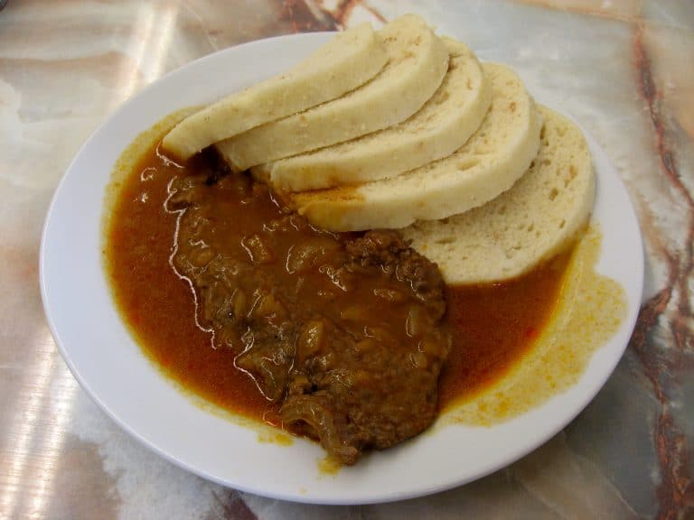
8. คเนดลิกี้ กรุงปราค
คเนดลิกี้ knedlik กรุงปรากอาหารขึ้นชื่อของกรุงปรากนั้นจะเป็นอาหารแบบชาวโบฮีเมียน
โดยมีหมูแฮมที่จะกลิ่นที่ข่อนข้างแรง
แต่ก็เป็นอาหารยอดนิยม
ที่เมื่อเดินทางเยือนถึงปรากแล้วต้องไม่พลาดที่จะชิม นั้นคือ คเนดลิกี้ knedlik หรือในภาษาอังกฤษเรียกว่า
“dumplings”
หน้าตาคล้ายแป้งซาลาเปา
เวลาเสิร์ฟ จะหั่นเป็นแว่น ๆ แล้วราดด้วยครีมหวานหรือ “smetana” หรือกินกับอาหารอื่น ๆ เช่น mard arsky gulas
(ฮังกาเรียน กูลาส)
ข้อควรระวังเวลากินคเนดลิกี้ คือ กินมากอาจจุกเสียดได้ คเนดลิกี้มีหลายชนิด แบบท็อปฮิต ได้แก่ ovocne knedliky
สอดไส้ผลไม้ แบบ bramborove knedliky
ทำจากมันฝรั่ง houskove knedliky เป็นคเนดลิกี้สีขาว และเป็นอาหารประจำบ้าน ยังมี svestkove knedliky ทำจากลูกพลัม
ซึ่ง ชาวเอเชียอย่างเราอาจไม่ถูกปากกับคเนดลิกี้มากนักเพราะค่อนข้างที่จะมีกลิ่นแรง
แต่ถ้ามาถึงที่แล้วก็ต้องลองของกินพื้นบ้าน ถ้ากินยากนัก แนะให้ดื่มควบคู่กับเบียร์
ถือว่าครบสูตรชาวเชก เมื่อพูดถึงเบียร์ คอเบียร์ต้องไม่พลาดเบียร์ยี่ห้อ starobrno ซึ่งดัง รสออกค่อนข้างหวาน
เหมาะกินแกล้มกับ knedliky มาก ๆค่ะ
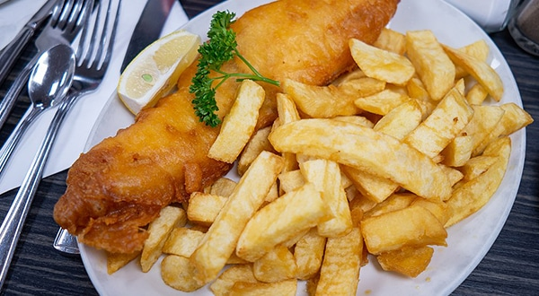
9. สเต็กปลาทอดและมันฝรั่งทอด
เหตุที่เมนูนี้ ติดอันดับอาหารที่ต้องไปทานเมื่อไปถึงอังกฤษ ก็เพราะว่าเมนู สเต็กปลาทอดและมันฝรั่งทอด
(ได้รับความนิยมมากที่สุดในประเทศอังกฤษ จนหลายคนบอกว่านี่เป็นอาหารประจำชาติไปแล้ว
เป็นเมนูที่ร้านอาหารทุกที่จะต้องมีไว้เป็นอันดับต้นๆ
และความอร่อยอยู่ที่เนื้อปลาสด ที่ผ่านการทอดจนข้างนอกกรอบ ข้างในเนื้อนุ่มมีรสหวานของปลาอ่อน ๆ
เมื่อทานคู่กับมันฝรั่งทอดจิ้มซอสมะเขือเทศ
หรือซอสสูตรพิเศษที่ทางร้านเตรียมไว้ให้ก็ยิ่งจะเพิ่มความอร่อยมากขึ้นไปอีกค่ะ
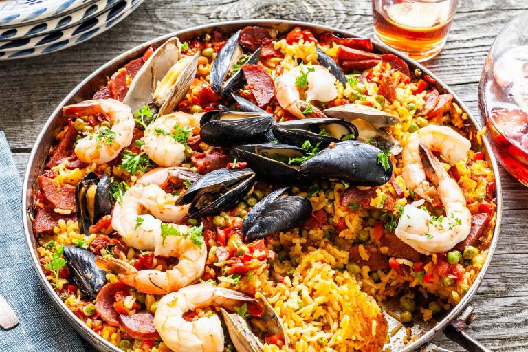
10. ปาเลรา
ปาเลรา paella หรือที่รู้จักกันดีในชื่อข้าวผัดสเปน ประเทศสเปนมีอาหารประจำชาติอย่างหนึ่งชื่อว่า paella อ่านว่า
ปาเลราอาหารจานนี้ต้องบอกว่าหากไปถึงดินแดนคนสู้วัวแห่งนี้ต้องลองเท่านั้น อาหารจะประกอบไปด้วยข้าวที่นำไปหุงให้สุก
เนื้อสัตว์เครื่องเทศ ราดด้วยน้ำสต็อก เป็นเมนูที่ผัดในกระทะแบนใหญ่ อัดแน่นด้วยซีฟู้ด ส่วนผสมส่วนใหญ่จะเน้นมะเขือเทศสับ หอมใหญ่
ใบไทม์พริกหยวกข้าวผัดสีเหลืองจัดตัดกับเหล่าซีฟู้ด กุ้งหอย ปู ปลา จัดจานมาเสิร์ฟ เห็นแล้วหิวกันเลยค่ะ
อ้างอิง:
ห้ามพลาด!! 11 เมนูอาหารเมื่อไปเยือนยุโรป